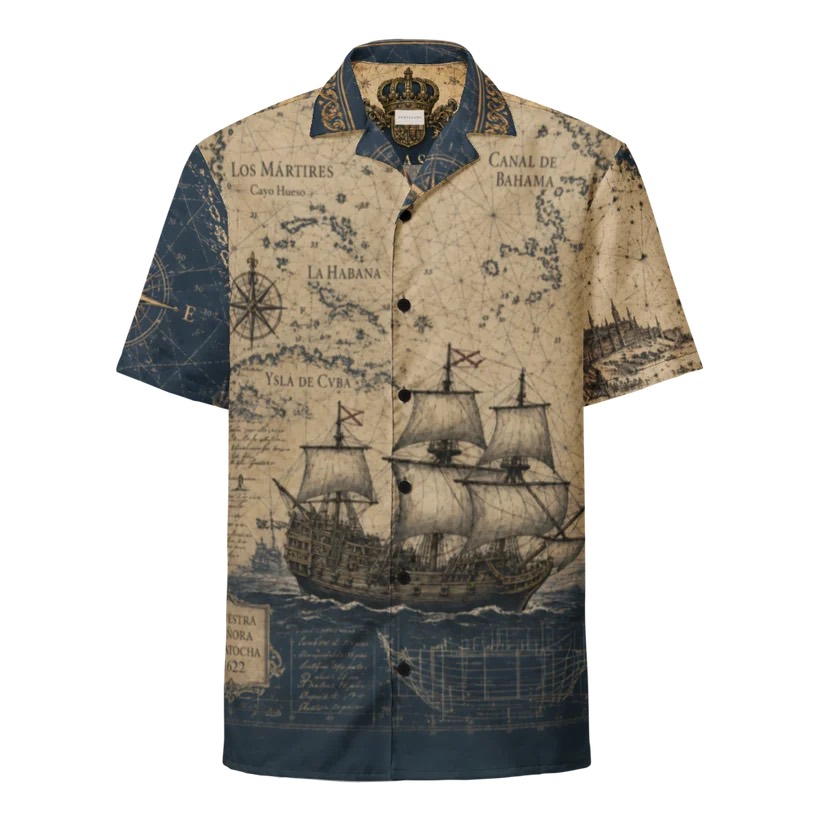
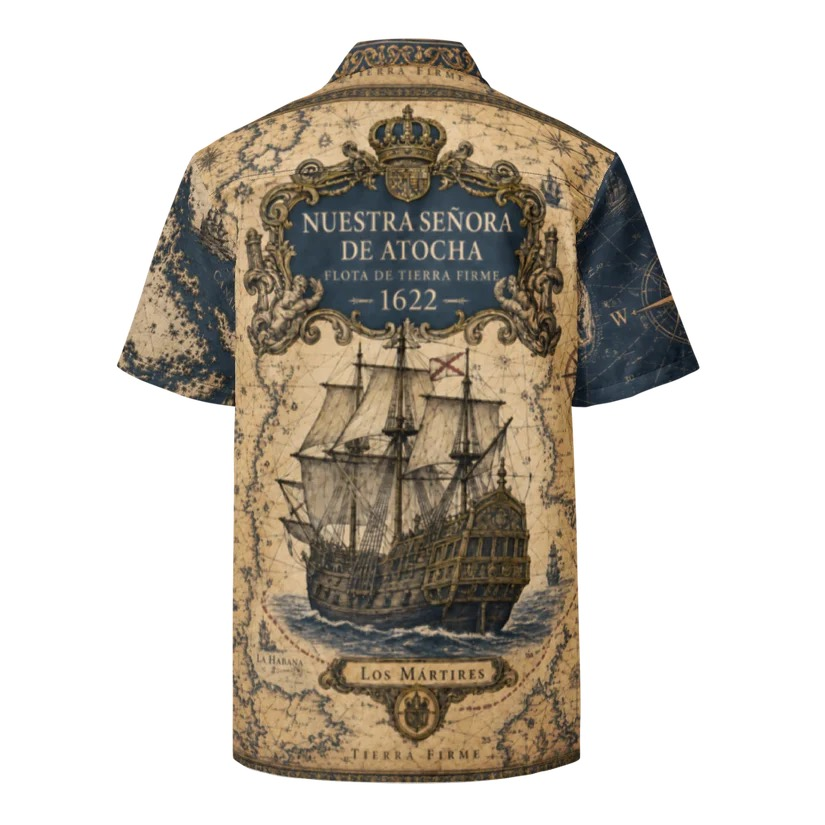
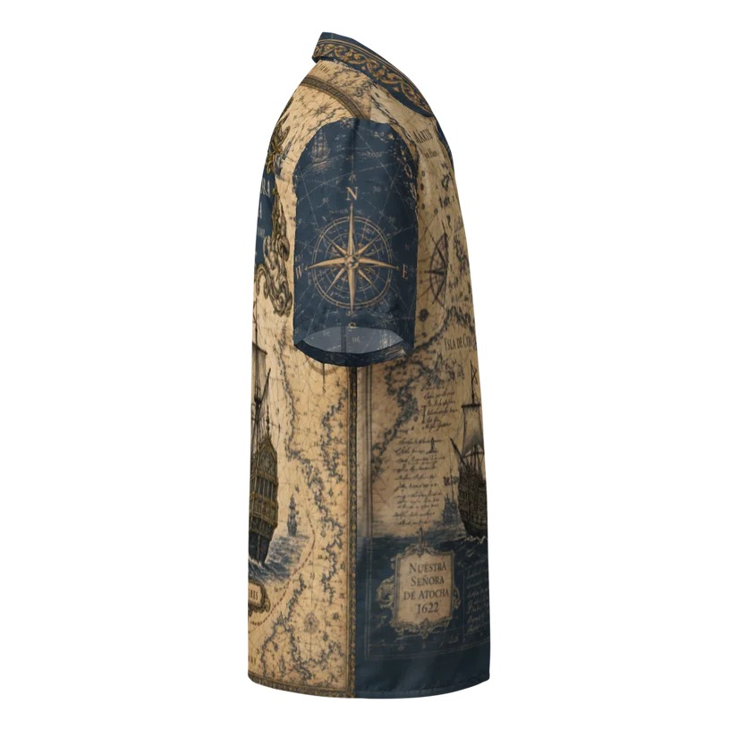
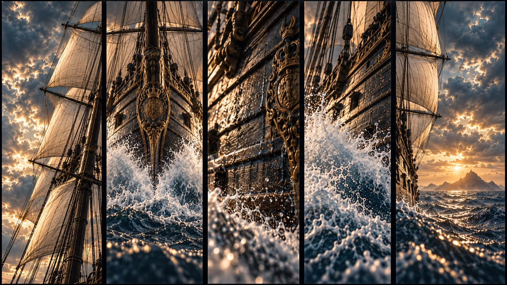
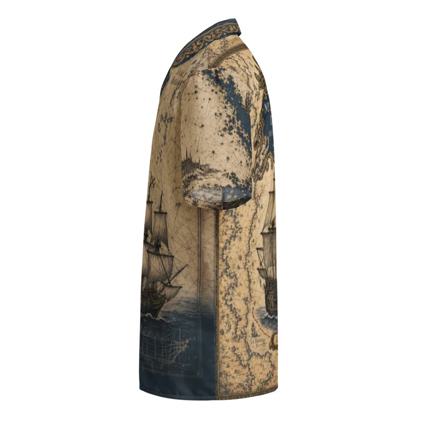

Historic routework
Weathered map fields wrap the body with routes, coastlines, bearings, and chart-room marks.
 Portulano
Portulano
Portulano vessel studies
Historic ships, old routes, stormlight, salt spray, and antique chartwork come together as wearable records of a life drawn toward the water.
Vessel Study | Chartwork | Garment
The product views move out of the storm and into a cleaner display: front and back as collected plates, built to let each vessel carry its own history without crowding the atmosphere around it.


Vessel Studies | Old Routes
Portulano follows vessels through the routes, harbors, shoals, and weather that made them memorable. The work begins with archival marks: coastlines, compass bearings, cartouches, rigging, and the names sailors left on maps.
This edition draws from the Nuestra Senora de Atocha, but the language is broader: parchment fields, deep maritime blue, aged ornament, and ship artwork made to feel discovered rather than manufactured.
Age of Sail Romance

The Portulano Treatment
Weathered map fields wrap the body with routes, coastlines, bearings, and chart-room marks.
The ship artwork gives each piece a focal point, balancing archival illustration with wearable scale.
Dark sea tones set off the parchment ground, giving the piece a sharper evening edge.
Inspection Deck



Current vessel study
For evenings near the water, old ports, resort bars, and wardrobes that make room for a little horizon.